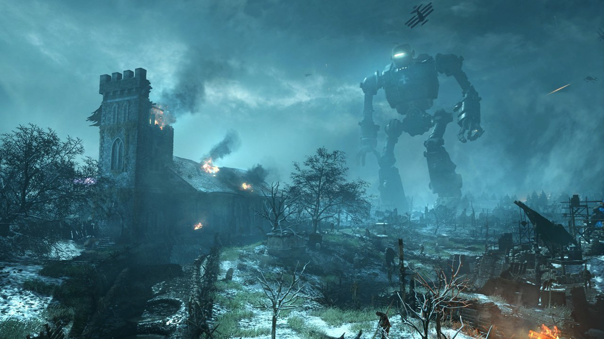

About Origins
The "Original characters" (Dempsey, Nikolai, Richtofen, and Takeo) once again appear as the four playable characters, this time as younger, alternate versions of their original selves, having large differences in their personalities. They are collectively known as "Primis". The zombies have yellow-orange and blue blue-violet in this map. The map features new Wonder Weapons called the Elemental Staffs that harness the power of the elements, a new enemy named the Panzer Soldat, the Mark IV Tank, a new utility called the Der Wunderfizz, and new Power-Ups such as the Zombie Blood.
Revealed in the cinematic intro of Origins, Zombies in typical crusader attire appear, but only spawn at underground tombs in the map, as well as within the The Crazy Place, a special area that can be entered by using a Gramophone. Unlike typical zombies, the crusader zombies have blue-violet eyes; the crusader zombies also make different noises than the normal zombies. Crusader zombies spawn alongside other zombies when attempting to activate a 115 Generator, to attack the players. Six 115 Generators are found across the map, acting as replacements for the classic Power Switch, and only power the area around it. Once all generators have been activated, a reskinned Pack-a-Punch Machine will activate. For the first time, the Mystery Box requires power to be used. The generators also power perk machines, although there are only five conventional perk machines and there are no machines at generators 2 and 6. There are no new perks, but rather a machine called Der Wunderfizz, that gives the player a random perk bottle when activated, much like the Mystery Box. The three Giant Robots: Freya, Odin, and Thor (from left to right, facing Generator Five from the excavation site) travel across the map in their respective "lanes" and will instantly down players when they step on them unless the player shoots the glowing foot or the player has a golden helmet. A forth robot can be seen behind the "tank station". This is a destroyed robot laying outside the map and is inaccessible.